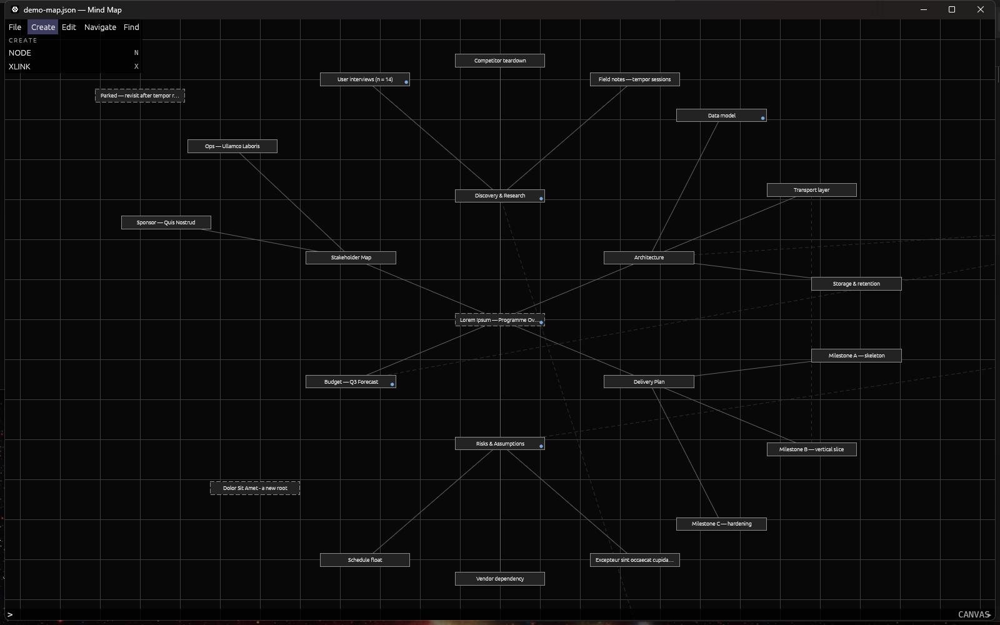
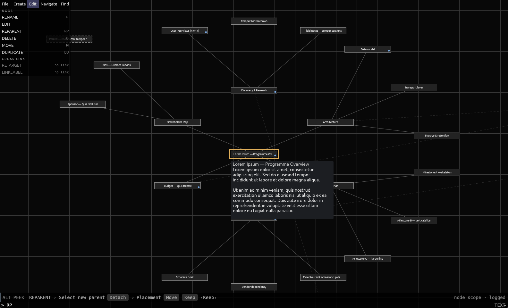

< CMDmap >
A mind-map editor you drive from a command line, the way AutoCAD is.

What it is
You type a short command, it asks for what it needs one prompt at a time, and it does the thing. Every command is also a labelled button in the palette on the left, generated from the command registry — so nothing is hidden behind knowledge you do not have yet, and nothing can be added to the application without appearing there.
A map is nodes and two kinds of edge. A node is a box with a label, and may carry a body of text as long as you like. Children are placed automatically around their parent on two rings — 8 slots inner, 16 outer, 24 children per node — and you can drag them anywhere afterwards; the line follows. The second edge kind is a cross-link, joining any two nodes across branches, drawn dim and dashed until something reveals it.
The command line is the only text-entry surface in the application. Every character you type goes there. There is no click-into-a-field, and there is nothing you can be stuck inside.
Windows 10/11, 64-bit. One file, nothing to install, no runtime to fetch.
Running it
Unzip cmdmap-0.1.3-windows-x64.zip anywhere and double-click cmdmap.exe. The zip carries the executable, the licence, and the four documents below. A SHA-256 sits beside it in the repository.
Windows will stop you the first time: “Windows protected your PC”. That is SmartScreen reacting to an unsigned exe — a code signing certificate is a recurring cost this alpha does not carry — not a virus warning. Click “More info”, then “Run anyway”.
Then read the Quickstart, which takes you from that first launch to a saved map without assuming you have ever used a command line for anything.
Three things that make it different
Peek. Type a command's name and don't press Enter. The prompt strip rehearses the entire sequence — every prompt, every bracket option, the default, and whether it is undoable — and runs nothing. Holding Alt over a palette button does the same. You can read a command before you commit to it.
Greyed buttons say why. A command you cannot use right now is still in its usual place, greyed, carrying the precondition it is waiting for: no node, no target, no link. Buttons never move or reorder.
It saves after every change. Every command that alters the map writes the file immediately, atomically. SAVE exists and you will rarely reach for it.

Your data
Maps default to Documents\cmdmap.json — a folder you can find is worth more than a tidy one you cannot. The log, the recent-file list, and backups live in %APPDATA%\cmdmap\config\, because none of that is yours to manage. Backups keep the five previous generations of each map.
Type VER and the history pane prints the exact paths for the map you have open, which beats reading any table.
What it deliberately is not
These are choices with reasons, not gaps waiting to be filled.
- No multi-select. Operating on several nodes goes through scope —
MOVEandDELETEtake the whole subtree by default, andShiftrestricts them to the one node — rather than through building and maintaining a selection. - No menus, no toolbars, no dialogs except the two file pickers Windows itself provides. The palette is the discovery surface.
- No animation. A zoom step is one frame.
- One map at a time. No tabs, no split view.
- No auto-layout, no themes, no plugins, no collaboration, no cloud. It is a local editor writing a local file.
- No export. Not to PNG, PDF, Markdown, OPML, or anything else. The file is plain JSON with a frozen shape, so writing your own converter is a small afternoon, and that is the current answer.
- Windows only. No macOS or Linux build exists or has been tested.
Documentation
- QUICKSTART — first launch through a first map.
- COMMANDS — all 25 commands: name, alias, chord, what each asks for.
- YOUR-DATA — where your maps and backups live, and what the format promises.
- REPORTING — how to send a bug report that can be acted on.
- MANUAL — the long version: every surface, every binding, with screenshots.
The alpha
The file format is frozen until 30 September 2026. A map written by any 0.1.x build opens in any other, in both directions, and there is no migration step that can go wrong. The freeze is enforced by a test rather than by intention. That date is what keeps the freeze bounded — after it, the format may move.
Two things testers report that are expected rather than defects:
- SmartScreen warns on first launch. Unsigned build. More info → Run anyway.
- A crash leaves no dialog. It writes the panic message, location and a backtrace to
cmdmap.logand closes. That file is the report. A crash handler that tried to save your document could turn a crash into data loss, so it does not.
Source
CMDmap is open source under the MIT licence: github.com/LemJukes/CMDmap-pub. Rust stable, Windows; cargo build --release and the toolchain is pinned. 425 unit tests and eight integration suites.
Built on egui / eframe, serde, ulid, rfd, directories, and thiserror.
Reporting a bug
Email cmdev@jukeltd.com. REPORTING.md has the template; the short version is that typing VER and screenshotting the expanded history pane answers most of what a report needs in one step.
Attach %APPDATA%\cmdmap\config\cmdmap.log. It holds command names, outcomes and errors — not your node labels, not your body text. If the application closed on its own, the last lines of that file are the crash; send them exactly as they are, including the block of hexadecimal addresses at the end. Those resolve against the debug symbols kept for this build, so please do not trim them.
Say what you did in numbered steps, what you expected, what happened instead, and whether it happens every time or happened once. Feedback that is not a bug goes to the same address with “feedback” in the subject line.